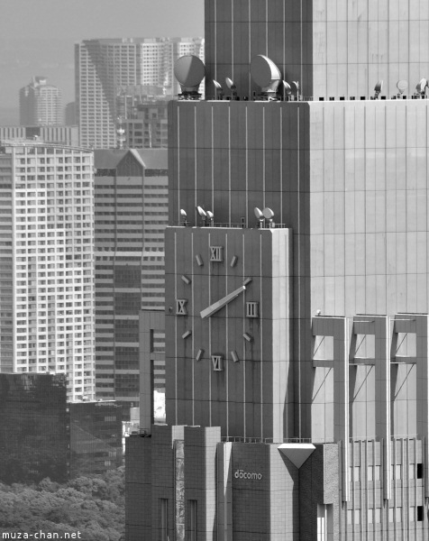
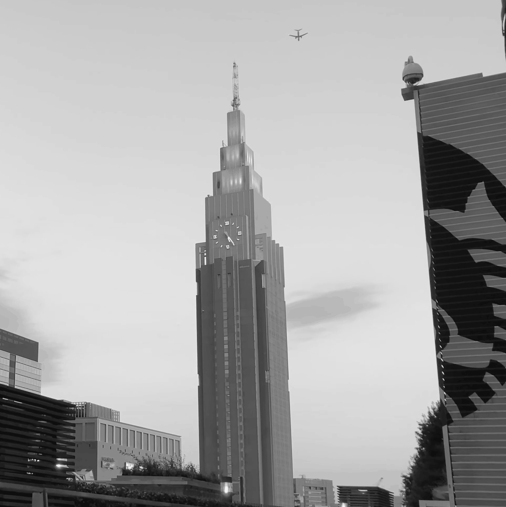

01
신주쿠의 시계탑
NTT Docomo Yoyogi Building
NTT 도코모 요요기 빌딩
신주쿠 서쪽 스카이라인을 이야기할 때 빠지지 않는 건물이 있습니다. 바로 NTT 도코모의 통신 중계탑 역할을 겸하는 이 빌딩으로, 높이 240m에 달하는 타워에 사면 각각 방향에 대형 시계가 달려 있어 주변 어디서든 시간을 확인할 수 있는 신주쿠의 랜드마크가 되었습니다. 2000년에 완공된 이 빌딩은 뉴욕의 엠파이어 스테이트 빌딩을 연상시키는 아르데코 스타일의 단계적 수직 구성이 특징으로, 21세기 직전에 지어진 건물임에도 불구하고 의도적으로 고전적인 마천루의 문법을 따르고 있습니다.


네 방향에 설치된 시계는 지름 10m에 달할 정도로 거대하며, 야간에는 조명을 받아 멀리서도 선명하게 읽을 수 있습니다. 통신 안테나 역할과 랜드마크 기능을 동시에 수행하도록 설계된 이 빌딩은, 도시의 스카이라인에서 일종의 좌표계 역할을 합니다. 신주쿠 어디에서 보아도, 심지어 멀리 시부야나 하라주쿠에서 올려다보아도 이 타워가 눈에 들어오기 때문에, 도쿄 도심에서 방향 감각을 잡는 데 은근히 유용한 건물이기도 합니다.


Location · 東京都渋谷区千駄ヶ谷5-24-10